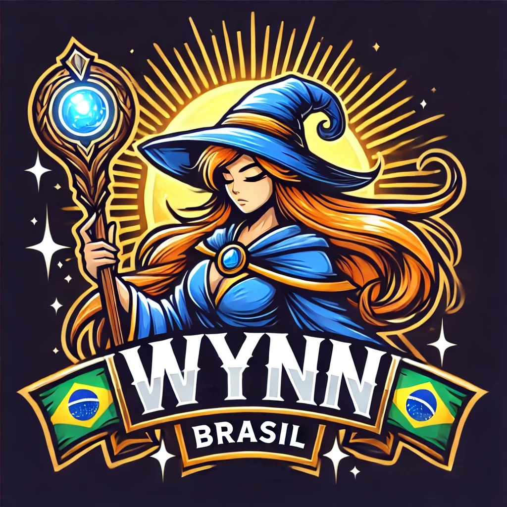
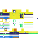
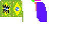

Bot Wynn Brasil
Bot de Discord que administra a guilda brasileira de WynnCraft de ponta a ponta: pontos de contribuição, temporadas, guerras, fila de Tomes e sincronização automática de cargos — com apenas duas dependências. A Discord bot that runs the Brazilian WynnCraft guild end to end: contribution points, seasons, wars, Tome queue and automatic role sync — with just two dependencies.
Visão Geral Overview
A Wynn Brasil é a comunidade brasileira do MMORPG WynnCraft (dentro do Minecraft). O bot é a espinha dorsal da guilda no Discord: vincula contas do jogo aos membros, mede a contribuição de cada um, organiza guerras e temporadas e mantém os cargos sempre em dia — reduzindo drasticamente o trabalho manual da staff.
The Wynn Brasil community is the Brazilian hub for the MMORPG WynnCraft (inside Minecraft). The bot is the guild's backbone on Discord: it links game accounts to members, measures each one's contribution, organizes wars and seasons and keeps roles up to date — drastically reducing the staff's manual work.
Um princípio de projeto guiou tudo: apenas duas dependências — discord.js e o driver oficial do mongodb. HTTP, agendamento e leitura de .env usam recursos nativos do Node.
One design principle guided everything: only two dependencies — discord.js and the official mongodb driver. HTTP, scheduling and .env reading rely on native Node features.
Comandos Commands
| /link · /unlink | Vincula (ou remove) a conta do jogo e concede o cargo de comunidade.Links (or removes) the game account and grants the community role. |
| /apply | Candidatura à guilda com votação de 24h e cooldown de reaplicação.Guild application with 24h voting and reapplication cooldown. |
| /season | Gerencia temporadas (start, end, current, list).Manages seasons (start, end, current, list). |
| /points · /leaderboard | Sistema de pontos de contribuição unificado e placar.Unified contribution-points system and leaderboard. |
| /war | Acompanhamento e apoio às guerras de território.Territory-war tracking and support. |
| /tome | Fila de Tomes com prioridade por pontos (join, leave, queue, grant).Tome queue prioritized by points (join, leave, queue, grant). |
| /membros | Lista membros por cargo e sinaliza inatividade expulsável.Lists members by rank and flags kickable inactivity. |
| /registro · /verificar | Fluxo de registro do membro e verificação da conta do jogo.Member registration flow and game-account verification. |
| /profile · /missao | Perfil do membro (pontos, rank, vínculo) e missões da guilda.Member profile (points, rank, link) and guild missions. |
| /uniforme | Disponibiliza para download o uniforme e a capa oficiais da Wynn Brasil.Provides the official Wynn Brasil uniform and cape for download. |
| /ban · /forcelink | (Staff) Moderação e vínculo manual de contas.(Staff) Moderation and manual account linking. |
| /calc · /loan · /config | Conversor de esmeraldas, livro-razão de empréstimos e configuração de canais/cargos.Emerald converter, loan ledger and channel/role configuration. |
São 19 slash commands no total, registrados por-guilda (aparecem na hora, sem espera de propagação global). 19 slash commands in total, registered per-guild (they show up instantly, no global propagation wait).
Skins Oficiais da Guilda Official Guild Skins
Uma feature que a comunidade adora: o comando /uniforme entrega o uniforme (skin) e a capa oficiais da Wynn Brasil direto no Discord, prontos para baixar e vestir no jogo. Os arquivos ficam versionados junto do bot.
A feature the community loves: the /uniforme command delivers the official Wynn Brasil uniform (skin) and cape straight in Discord, ready to download and wear in-game. The files are versioned alongside the bot.

UniformeUniform
Skin oficial · 64×64Official skin · 64×64

CapaCape
Bandeira do Brasil · 128×64Brazil flag · 128×64
/uniforme peca:tudo
Automações em Background Background Automations
Monitoramento em tempo real Real-time monitoring
Poller de ~60s que atualiza um painel ao vivo, registra logs de atividade, acompanha território e recursos e dispara auto-ping de guerra.
A ~60s poller that updates a live panel, records activity logs, tracks territory and resources and fires war auto-pings.
Sync de cargos Role sync
Concede automaticamente os cargos de "Membro da Guilda" e "Top Contribuidor" e reconcilia entradas e saídas da guilda.
Automatically grants "Guild Member" and "Top Contributor" roles and reconciles guild joins and leaves.
Snapshot diário Daily snapshot
Fotografa progresso, placar de guerras e pontos (all-time e por temporada) para histórico e rankings confiáveis.
Captures progress, war scoreboard and points (all-time and per season) for reliable history and rankings.
Candidaturas & auditoria Applications & audit
Fecha candidaturas no prazo, envia lembretes de empréstimos e registra auditoria e erros do bot em canais próprios.
Closes applications on time, sends loan reminders and logs audit trails and bot errors to dedicated channels.
Inatividade Justa pela Contribuição Fair Inactivity by Contribution
Um detalhe que gosto: a expulsão por inatividade não é um número fixo. Cada membro é medido contra o próprio limite — um limite base mais um "perdão" proporcional aos pontos de contribuição. Quem mais ajuda a guilda ganha mais margem, e o comando /membros mostra exatamente quem já pode ser expulso e quem está protegido pela contribuição.
A detail I like: inactivity kicks aren't a fixed number. Each member is measured against their own threshold — a base limit plus a "forgiveness" proportional to contribution points. Those who help the guild most get more slack, and the /membros command shows exactly who is already kickable and who is protected by contribution.
Números do Projeto Project Numbers
Stack & Deploy
Node moderno (ESM), MongoDB para persistência e deploy conteinerizado em VPS própria via Docker Compose, com endpoint de health check.
Modern Node (ESM), MongoDB for persistence and containerized deployment on a dedicated VPS via Docker Compose, with a health-check endpoint.